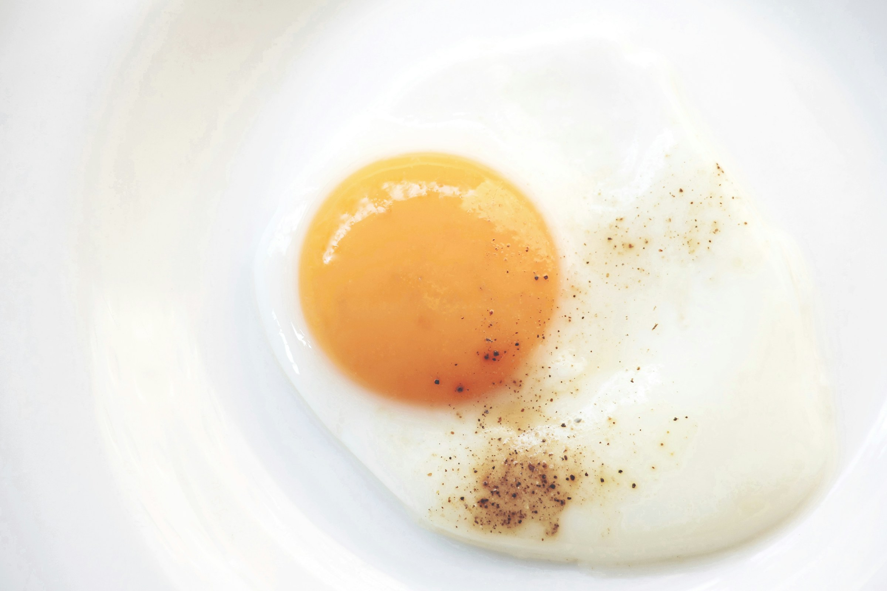

Side-up

This is very simple recipe that you can cook under 10 minutes
and you can master just cooking it once!
Ingredients
- Oil or butter (Prefered)
- Fresh Eggs
- Salt (optional)
- pepper (optional)
Steps
- Heat the frying pan
- Melt the butte or heat the oil
- crack the eggs in the pan
- fry as you like it and serve.